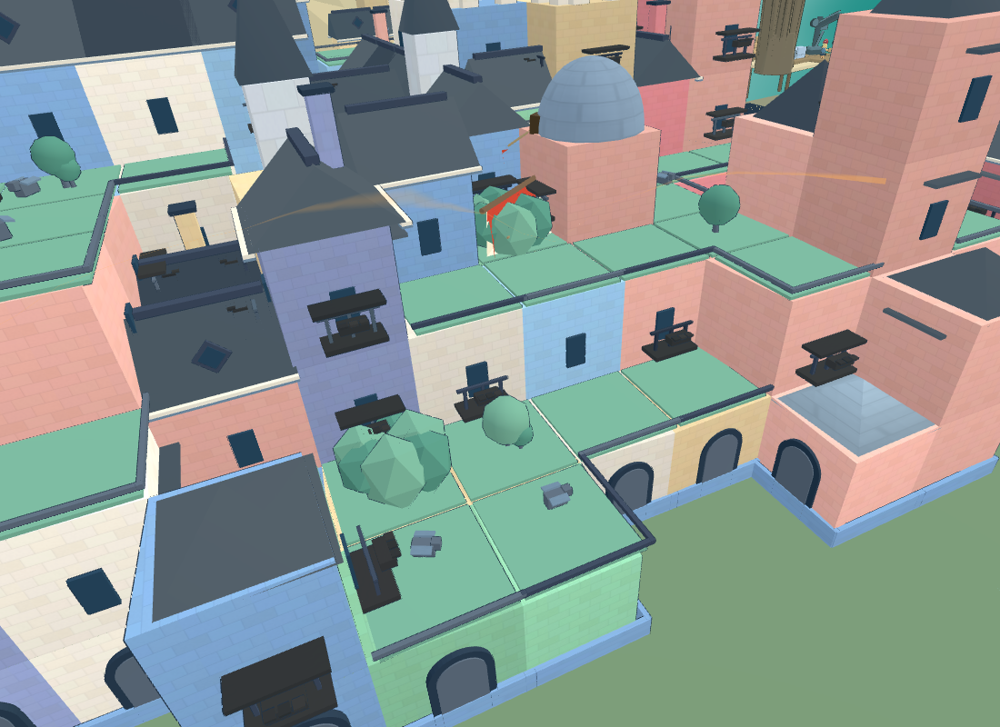
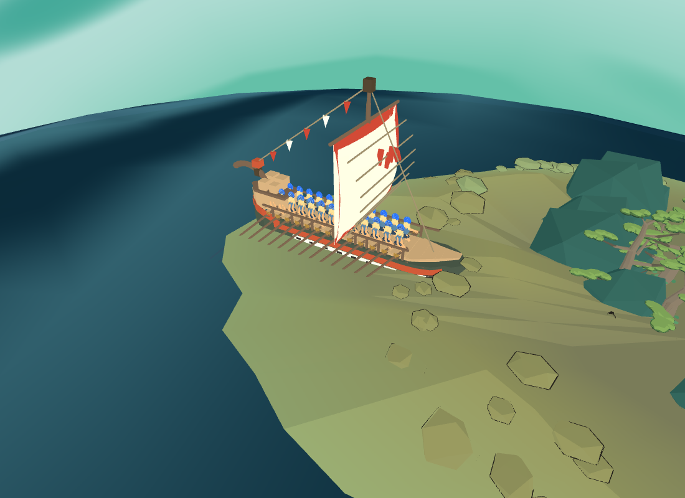

去程：原建筑遮挡仍在

这是原场景实图，初段船被城内建筑遮住。本页不把朝向通过写成航线无碰撞。
10 项通过 · 源版本稳定 · 真实 8931 页面。本轮为已接入实际公共工厂的 Blender v6 战船；去返程 +X 与速度方向一致。
修复船用反射坐标系、增援侧移偏航与停靠朝向。原航线与航时保留。
最终数据 · 范围与未通过事项 · 两轮 Blender 船头对照

这是原场景实图，初段船被城内建筑遮住。本页不把朝向通过写成航线无碰撞。

返程由原鲸返回回调诊断触发。固定半径路线仍使船体贴入苔庭板面；终点泊位重摆也保留，单独记录，均未验收。